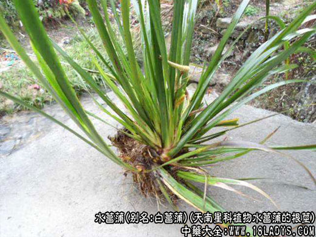

出自《名医别录》。为天南星科植物水菖蒲的根茎。除新疆、西藏外，全国各地均有分布。四季均可采挖，除去须根，洗净晒干。
别名：白菖，白菖蒲，泥菖蒲，泥菖，臭菖，臭菖蒲，臭蒲根，水菖，水昌，水宿，大叶菖蒲，茎蒲，溪荪，兰荪，地心，蒲剑根，水八角草根，家菖蒲，土菖蒲，水见消，臭蒲，菖蒲。
商品名：水菖蒲，白菖蒲，白菖。以根茎粗长、气味浓、干燥、无须根及泥土者为佳。
处方名：水菖蒲，臭蒲根。
注意：本品与石菖蒲功效不同，不能混用。
性味归经：苦、辛，温。归心、肺、大肠经。
功效与作用：化痰，开窍，行气，利湿。主治癫痫，神识不清，慢性气管炎，痢疾，肠炎，腹胀腹痛，风寒湿痹，痈肿疥疮。
用量： 3～6克。外用适量。
慎忌：阴虚阳亢、多汗、滑精者慎服。